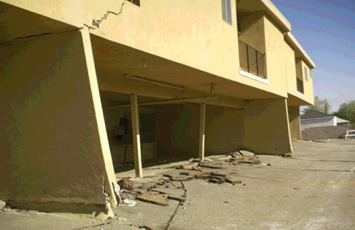

What are soft story buildings?
Soft-story buildings are multi-unit, wood-frame, residential buildings with a first story that lacks adequate strength or stiffness to prevent leaning or collapse in an earthquake. These buildings pose a safety risk to tenants and occupants, a financial risk to owners and risk the recovery of the City and region.

It is not possible to know simply by looking at the outside of the building that it is a soft-story. Large openings for garage doors or commercial spaces are a strong indicator, but only a detailed analysis by a structural engineer can definitively determine whether a building is a soft-story.
Soft story buildings are not the only buildings at risk in an earthquake, but they are more vulnerable in general.
What is this data?
This data shows the results of a screening program for potential soft-story buildings in Oakland. In 2008 Oakland surveyed its multi-family buildings with five or more units, and in 2009 passed an ordinance that required the owners of these buildings to complete a simple evaluation of the ground floor. This data shows the results of these screenings as of early 2013.
The soft-story program is still in progress, and therefore the status of a building may have changed (for example, if an owner submitted a screening or a building was retrofitted more recently).
What buildings were screened?
Oakland's screening program applied only to some of the potential soft-story buildings, specifically those:- Permitted for construction prior to adoption on January 1, 1991 of the 1988 edition of the Uniform Building Code
- With parking or commercial on the ground floor
- With 5 or more residential units (apartments, condos, or live-work)
- Not structurally retrofitted for earthquakes forces already
- 2+ stories
What can you do?
Use this tool to find your building's screening status. You can also talk to your building owner to learn more specifics about the seismic safety of your specific building.
To learn more about soft-story buildings, read the the Association of Bay Area Governments (ABAG)'s detailed analysis of the issue in Oakland and check out the City's soft-story seismic screening program FAQ.
The ABAG report includes both analysis of this screening data and recommendations for helping the City, building owners, and tenants improve the city's soft-story building resiliency.
Contributors
This is a project by

Connect with us (@OpenOakland).
If you have feedback on this app, please let us know!
This view of the data was primarily built by two folks:
- Dave Guarino (@allafarce)
- Michal Migurski (@michalmigurski)
But there have been many other contributors to this project, including:
- Cris Cristina
- Jay Bolton
- Steve Spiker
- Molly McLeod
- Alan Williams
- And many others at OpenOakland over the course of this year
This is an open source project - if you want to contribute in any way, you'll find the code on GitHub.
If you have an interest in raising awareness of this housing safety issue with tenants and owners (or working on related projects!) join us on Tuesdays for Civic Hack Night!
You can also access the data in one convenient file here.
Thanks
We want to thank the City of Oakland (in particular, the Emergency Management Services and Building Services divisions) for working with us to collect and understand the data, as well as ABAG for its superb analysis and help understanding its report.